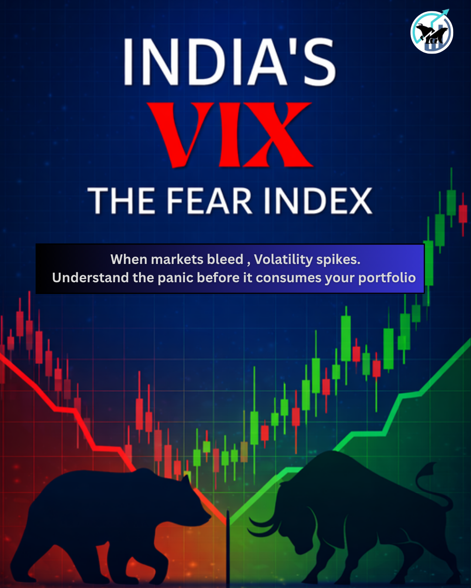
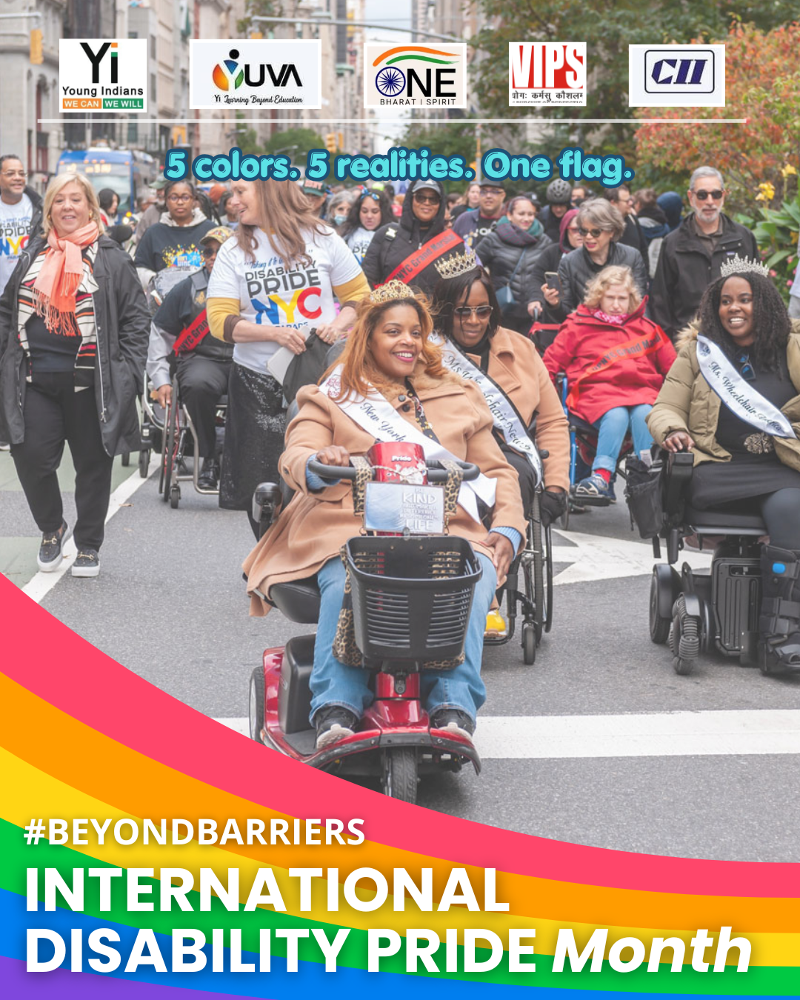
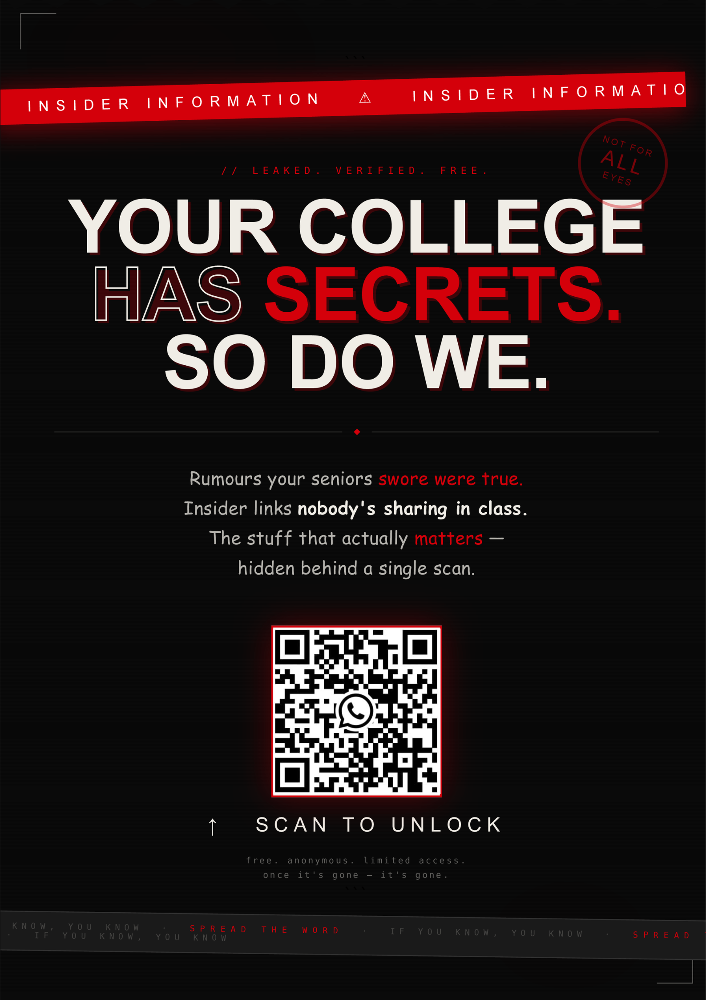

FINSEC · Finance Content
India VIX
Turning a market-volatility concept into a strong visual finance explainer for social media.
View full work ↗Selected Work · 2026
A collection of marketing, finance, social media and creative work that reflects how I'm learning to turn information and ideas into content people can actually engage with.
Visual Portfolio
A curated preview of the work I want visitors to notice first — combining finance communication, awareness content and campaign-style creativity.

Turning a market-volatility concept into a strong visual finance explainer for social media.
View full work ↗
A consistent awareness-content series built around inclusive communication and visual clarity.
View full work ↗Research-led financial communication presented in a visual format designed for a student audience.
View full work ↗
A darker, attention-led teaser creative that shows a different side of my visual and campaign thinking.
View campaign work ↗Featured Projects
The work below gives more context around the projects, the type of communication involved and what I learned from doing them.
My own portfolio website, built to create a professional digital presence around marketing, creativity, content, finance and strategy.
The project combines personal branding, web development, content organisation and visual communication into one practical piece of work.
A social media awareness series created for CII Yi YUVA around International Disability Pride Month, including content around physical disability, neurodivergence, mental health and broader disability awareness.
I worked on turning a broad awareness theme into a visually consistent content series with clear educational messaging, inclusive language and a recognisable campaign identity across multiple posts.
A set of finance-focused social media creatives produced through FINSEC. The work covers market concepts and current financial topics through visual explainers rather than plain text.
Topics include India VIX, geopolitical volatility, the Iranian currency crisis and India's forex reserves. These pieces helped me practice simplifying finance-heavy information, structuring it for social media and presenting it visually.
Alongside finance explainers, I also worked on broader visual communication for FINSEC — including event promotion, teaser-style creatives and festival communication.
The work ranges from a darker teaser-led campaign concept to a festive Eid creative, showing that I can adapt the visual tone depending on the communication objective.
What This Work Shows
Turning broad or technical topics into structured social media content with a clear message and purpose.
Adapting layouts, typography, imagery and tone to match different audiences, topics and campaigns.
Explaining market and economic topics in a more accessible visual format without losing the core idea.
My Approach
I'm interested in projects where creativity has a purpose. I like understanding the objective first, exploring different ideas and figuring out how the final work can communicate effectively.
I'm still building my experience, so I want this portfolio to show real work and honest progress rather than inflated claims.
Let's Connect
I'm interested in learning, collaborating and working on meaningful marketing, finance-content and creative projects.